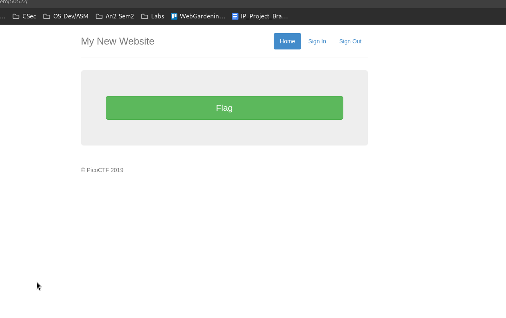
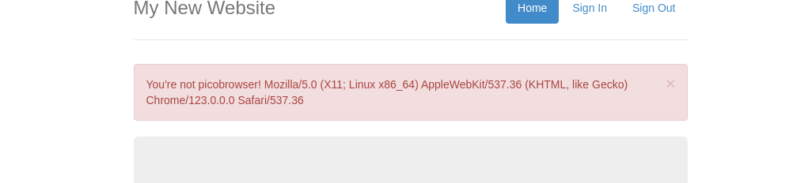
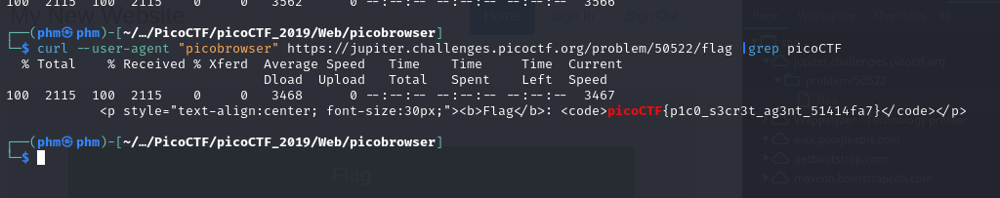
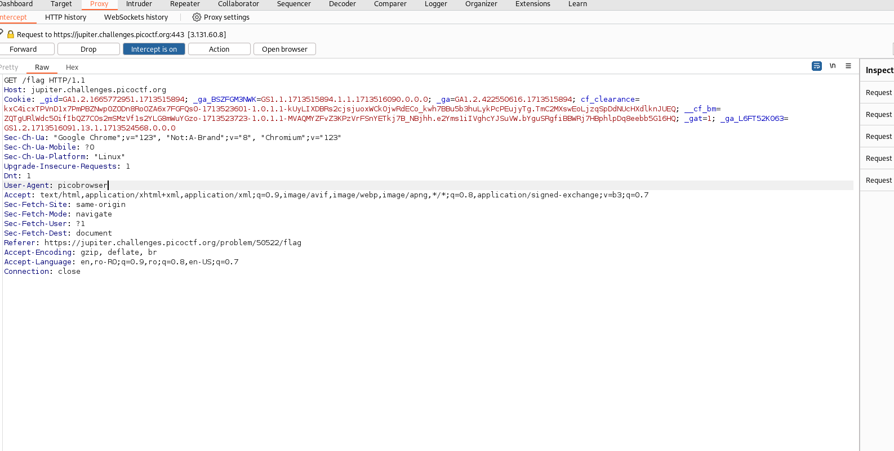
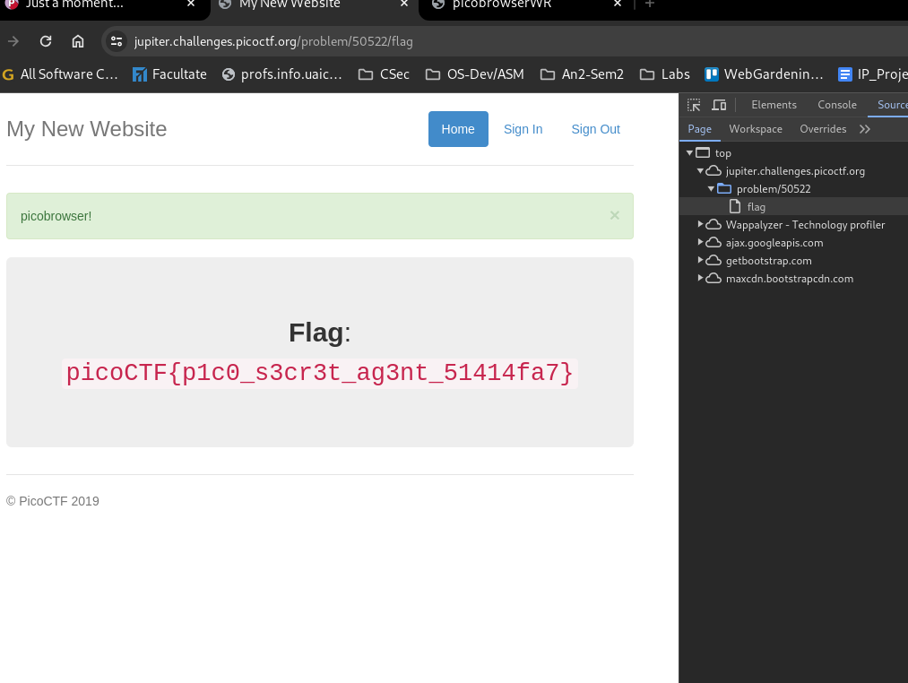

The page looks like this:

If I press the flag button I get this:

Let's try curl with user-agent picobrowser :
└─$ curl --user-agent "picobrowser" https://jupiter.challenges.picoctf.org/problem/50522/flag |grep picoCTF

We got the flag!
We can try one more method.
BurpSuite:

We just change the User-Agent to "picobrowser" and we will get:
